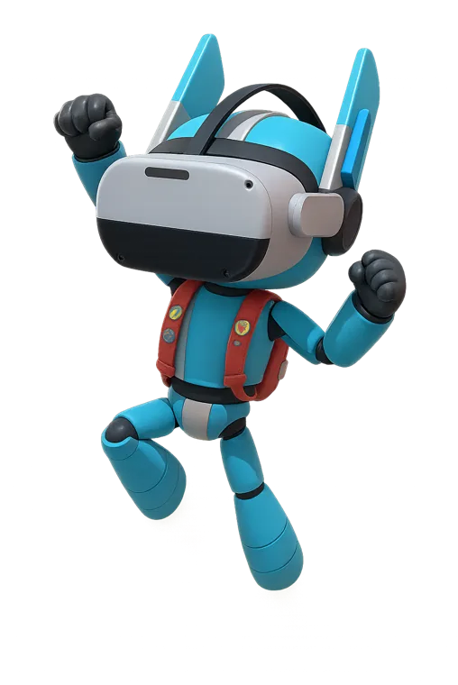
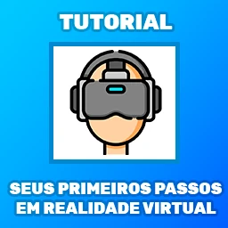
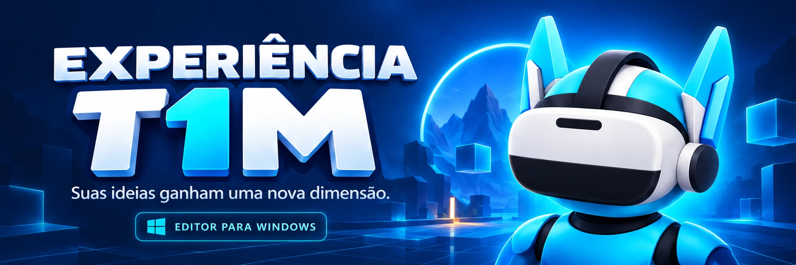
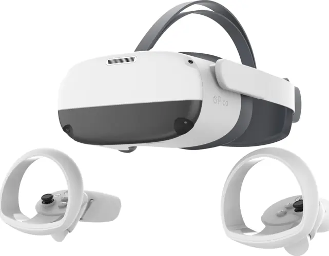

REALIDADE VIRTUAL NA EDUCAÇÃO
Central de Informação
do SOATVR.
Encontre guias, acompanhe as atualizações e conte com o T1M para levar as imersões à sua sala de aula.

CHANGELOG
Atualizações
BASE DE CONHECIMENTO
Guias e primeiros passos

Primeira aula com o SOATVR
Da conferência da estação ao teste do Modo Aula e do aplicativo Primeiros Passos · Tutorial.
Materiais de consulta
Experiência T1M
O Experiência T1M é um editor para criar e organizar experiências em ambientes 3D. Escolha um cenário, adicione objetos e ajuste sua composição para transformar suas ideias em espaços imersivos.

Guias do Experiência T1M
Telas do editor

PARCEIRO DE TECNOLOGIA
PICO Neo3
Conheça o headset da PICO, da ByteDance, utilizado nas estações SOATVR. Confira como preparar o equipamento para a primeira imersão.
PICO BusinessMUNDO T1M
Catálogo de imersões
Busque por título ou tema e refine por ano, série ou componente curricular.